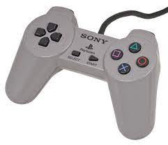
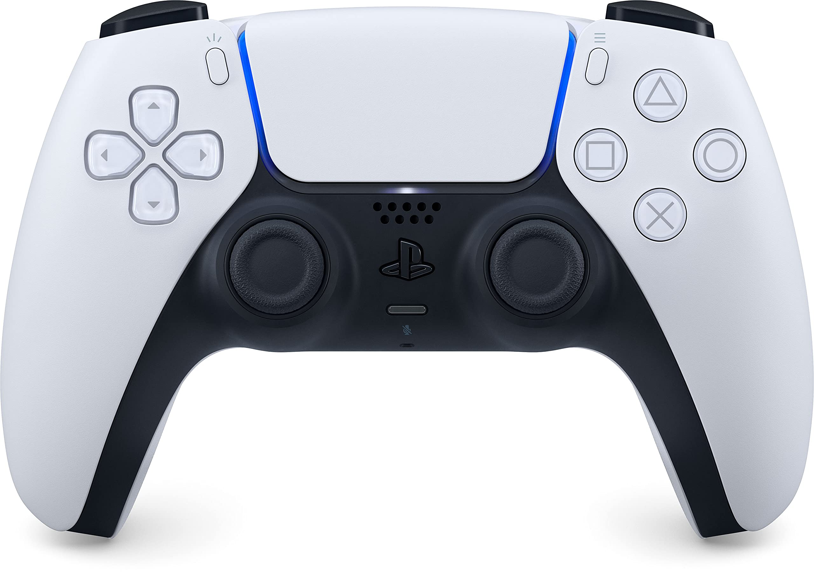

Evolution of the Playstation controllers
When Playstation first produced they made a small handheld controler which was to small for the hands of gamers and no thumbsticks.
Then the ps2 controler which finaly introduced the revolutionary thumbsticks which made it easier to move in game giving a full 360° of rotation.

Then the ps3 controler came out which had the option of the controlers to be complete wireless from the console
And then the ps4 controler came out which was much more comfortable and nicer to hold with new option called dual sesne which allowed you to move the controler and it made it move in the game, almost like the wii controller.
The ps5 controler has a sleek new design easy to be held and it has the dualsense on it aswell with just a general nicer feel
